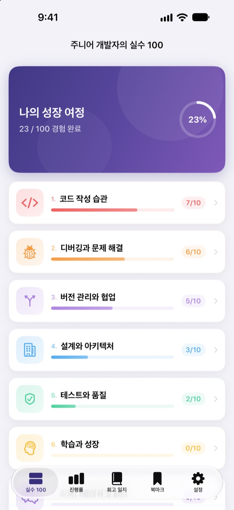
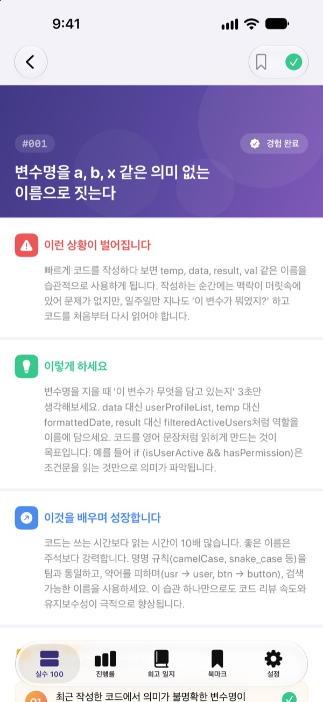
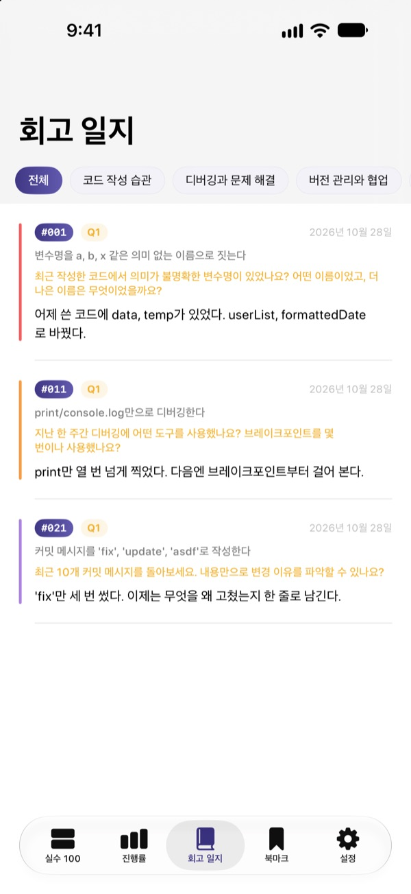
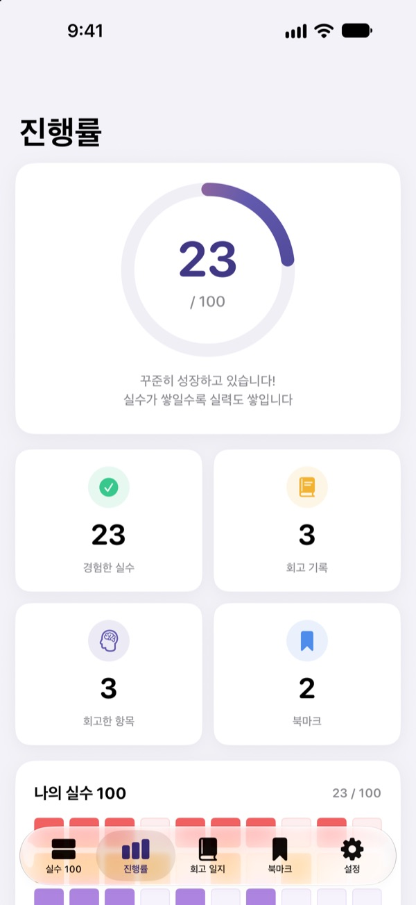

아프게 배우기 전에
먼저 알고 가세요
주니어 개발자가 가장 많이 하는 실수 100가지를 모았어요. 실수마다 어떤 상황이 벌어지는지, 어떻게 하면 되는지, 무엇을 배우는지 읽고 회고 질문에 답하면 같은 실수를 두 번 하지 않아요.
처음 30개 실수는 무료예요. iPhone, iPad, Mac에서 써요.

실수 하나 열어 보세요
무료로 열려 있는 첫 분야의 실수 10개예요. 앱에 있는 글 그대로예요. 겪어 본 실수는 경험 완료로 체크해 보세요.
코드 리뷰에서 같은 지적을 또 받았나요?
변수 이름, 너무 긴 함수, 복붙한 코드. 선배들은 다 한 번씩 겪은 실수인데, 나는 직접 부딪혀야 알게 돼요. 실수 100은 그 실수들을 먼저 보여 주고, 내 경험에 비춰 돌아보게 해서 같은 실수를 반복하지 않게 도와줘요.
실수마다 상황, 할 일, 배울 점
실수 하나를 열면 이런 상황이 벌어진다, 이렇게 하면 된다, 이것을 배우며 성장한다는 세 부분으로 풀어 줘요.
코드 작성 습관부터 보안, 성능까지 10개 분야, 실제 현장에서 반복되는 실수만 골랐어요.

읽고 끝나지 않게, 회고 질문
실수마다 회고 질문이 4개씩, 모두 400개가 있어요. 내 프로젝트를 떠올리며 답을 쓰면 읽은 지식이 내 경험이 돼요.
쓴 답은 회고 일지에 분야별로 모여서 언제든 다시 볼 수 있어요.

얼마나 자랐는지 한눈에
겪어 본 실수를 체크하면 분야별, 전체 진행률이 쌓여요. 다시 보고 싶은 실수는 북마크해 두세요.
기록은 iCloud로 iPhone, iPad, Mac에서 이어져요.

시작은 세 단계면 돼요
- 1
분야를 고릅니다
코드 작성 습관, 디버깅과 문제 해결, 버전 관리와 협업은 무료로 바로 열려요.
- 2
실수를 읽고 체크합니다
겪어 본 실수는 경험 완료를 눌러 표시해요.
- 3
회고 질문에 답합니다
내 경험을 떠올리며 짧게라도 적어 보세요. 회고 일지에 모여요.
다루는 10개 분야
- 코드 작성 습관
- #001–#010 · 무료
- 디버깅과 문제 해결
- #011–#020 · 무료
- 버전 관리와 협업
- #021–#030 · 무료
- 설계와 아키텍처
- #031–#040 · PRO
- 테스트와 품질
- #041–#050 · PRO
- 학습과 성장
- #051–#060 · PRO
- 커뮤니케이션과 협업
- #061–#070 · PRO
- 배포와 운영
- #071–#080 · PRO
- 보안과 데이터
- #081–#090 · PRO
- 성능과 최적화
- #091–#100 · PRO
분야마다 실수 10개, 실수마다 회고 질문 4개가 있어요.
30개는 무료, 100개 전체는 PRO
무료
- 처음 3개 분야, 실수 30개
- 그 실수들의 회고 질문 120개
- 경험 체크, 회고 일지, 진행률, 북마크
- iCloud 동기화 (iPhone, iPad, Mac)
실수 100 PRO
- 나머지 7개 분야, 실수 70개 (#031 ~ #100)
- 회고 질문 280개 추가
- 앞으로 나올 콘텐츠 업데이트
월간 구독, 연간 구독(월간보다 최대 50% 저렴), 한 번 결제하는 평생 이용권 중에서 골라요.
개인정보를 모으지 않고, 분석 도구와 광고도 없어요.
자주 묻는 질문
무료로 어디까지 볼 수 있나요?
코드 작성 습관, 디버깅과 문제 해결, 버전 관리와 협업 3개 분야의 실수 30개와 회고 질문을 모두 쓸 수 있어요. 경험 체크, 회고 일지, 진행률, 북마크, iCloud 동기화도 무료예요.
구매한 PRO를 다른 기기에서 쓰려면요?
같은 Apple ID로 로그인한 뒤 구독 화면의 구매 복원하기를 눌러 주세요.
구독은 어떻게 취소하나요?
설정 앱의 Apple ID › 구독에서 언제든 관리하고 취소할 수 있어요. 현재 기간이 끝나기 24시간 전까지 취소하지 않으면 자동으로 갱신돼요. 평생 이용권은 한 번만 결제해요.
기기 사이에 기록이 동기화되지 않아요.
모든 기기에서 같은 Apple ID로 iCloud에 로그인되어 있는지, 설정에서 이 앱의 iCloud 사용이 켜져 있는지 확인해 주세요. 동기화하려면 네트워크 연결도 필요해요.
기록을 모두 지우고 싶어요.
앱 설정에서 모든 데이터 초기화를 누르면 체크, 회고 기록, 북마크가 모두 지워져요. 되돌릴 수 없으니 주의해 주세요.
어떤 기기에서 쓸 수 있나요?
iPhone, iPad, Mac에서 쓸 수 있어요. 한 번 구매한 PRO는 같은 Apple ID의 모든 기기에서 열려요.
제 기록이 어딘가로 보내지나요?
아니요. 체크와 회고 답변은 내 기기와 내 iCloud에만 저장돼요. 개인정보를 모으지 않고, 분석 도구와 광고도 없어요.
궁금한 점이나 제안은 leeo@kakao.com로 보내 주세요.